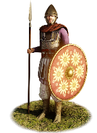
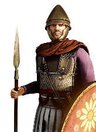

RTR: Imperium Surrectum
RTR: Imperium SurrectumCappadocian Royal Infantry Guard


Class: spearmen · Category: infantry · Men per unit: 40
Description
The guard of the Cappadocian kings is composed of the best infantry the realm can muster. Armed with javelins and spears, they are both skilful attackers and defenders. Large, round pelte shields are used to block missiles or slashes, while thick scale cuirasses protect their torsos and Greek, Anatolian, or Perso-Assyrian helmets their heads. Colourful clothes, cloaks, and decorations on both cuirasses and shields show everyone that these soldiers are the chosen elite of the royal army.
Historical background
“In certain parts of Cappadocia they say that honey is made without wax, and that it is of the consistency of oil.” – Aristotle, Mirabilia 17.
The inclusion of this quote may leave the reader quite confused, but it illustrates three important points. First, Cappadocia produced many valuable goods. Second, the Greeks did not really care about the land aside from it producing some oddities, such as this honey. Third, Aristotle wrote down every bit of nonsense he was told. This left the RIS team with a serious problem when researching the Cappadocian roster, for how can we put one together if our main source, Greek texts, are either disinterested or untrustworthy? Luckily, one day, we came across images from the archaeological museum in Yozgat in the homonymous province of Turkey, an area which was part of Cappadocia in antiquity. The staff of the museum has participated in archaeological excavations across Cappadocia and many objects from the Hellenistic kingdom can be found on display in the building (Brantin/Lehner/Baltalı-Tırpan et al., The Kerkenes Project 2015-2016 (2017), pp. 174-175).
On one of the friezes kept in the museum, heavy infantry with large, round pelte shields and javelins can be made out (they can be found on Flickr, pickett.jordan: https://www.flickr.com/photos/jordanpickett/8448875144/in/photostream/). Not many other details have been preserved, but for an elite infantry unit, the heavy armour of Cappadocian cavalry may well have applied. Various 3rd century BC coins depict the Ariarathid kings as horsemen in scale cuirasses (Simonetta 6; SNG von Aulock 6357; HGC 7, 795 or Simonetta 2a; HGC 7). On other friezes from the Yozgat Museum, all dated from the Hellenistic to the early Roman periods, Cappadocian soldiers wear conical helmets. They are similar to the Greek pilos helmet, but more conical at the top and, sometimes, cheekguards had been added, as with some pilos helmets from 4th century BC Magna Graecia (Merrony, Mougins Museum of Classical Art (2011), no. 88; pp. 215-217). The origin of the Cappadocian helmets lies further east in the area from Armenia to Assyria, however, and an Assyrian helmet worn by a soldier in the Achaemenid army at the battle of Marathon in 490 BC is kept in the Archaeological Museum of Olympia (Olympia, Archaeological Museum, B5100). It is probably exactly due to the simplicity of the design that these types of helmets continued to be used for a millennium. Other, typically Hellenistic helmets like the Phrygian or aforementioned pilos complete the mix for our royal infantry. Lastly, the unit uses spears for melee, like most other guard units in the area (e.g., Hypaspists).
Such men may have been raised for the first time when Eumenes of Kardia, the secretary of the late Alexander the Great, was sent to Cappadocia by the regent Perdikkas in 321 BC. There, Eumenes assembled an army of 6,300 horsemen and united both Macedonians and Cappadocians in one force (Plut. Eumenes 4.3-4). Many of the new soldiers were taken from the army of 15,000 horsemen and 30,000 infantry that had been commanded by the defeated satrap of Cappadocia, Ariarathes, in the previous year (Diod. 18.16.2). In fact, Plutarch mentions that Eumenes had a sizable contingent of infantry in his army (Plut. Eumenes 5.3). There can be no doubt that some of these proved to be better than others during these campaigns, and/or possessed the money to buy themselves better equipment. The cloaks, colourful shields, and trousers of the Cappadocian royal infantry guard symbolise this wealth and elite status. The core of Eumenes’ army probably served as the basis for the new army of the Cappadocian principality when it was (re-)established by Ariarathes II with Armenian help in ca. 280 BC (Diod. 31.19.5). He and his son and successor, Ariaramnes II, still acknowledged Seleucid suzerainty (Shabazi, s.v. “Ariyāramna”, Encyclopaedia Iranica 2.4 (1986), p. 410). When the Seleucids needed their loyalty during their wars against the Ptolemies in the 250s BC, Antiochos II (r. 261-246 BC) married his daughter Stratonike to Ariaramnes’ son Ariarathes III, thus factually acknowledging Cappadocian autonomy (Shabazi (1986), p. 411). Subsequently, Ariaramnes promoted Ariarathes to his co-ruler and bestowed the diadem upon his head, making him the first king of Cappadocia proper (Diod. 31.19.6; cf. Raditsa, Iranians in Asia Minor, in: Yarshater, The Cambridge History of Iran 3.1 (1983), p. 115). No king would have done without a royal guard, and despite the lack of direct evidence it is easy to imagine that Ariarathes III would have decorated his best men with the shiniest and most beautiful clothes and armour and have afforded them with the time and space for extra training.
Such a guard unit was even more important under bad kings, because the soldiers preserved the security and authority of the royal dynasty. This was allegedly the case under Ariarathes V (r. 163-130 BC). He spent his childhood in Rome, while his younger brother Holophernes was sent to Priene where he received Ionian education (cf. Diod. 31.19.7). While Diodorus states that Ariarathes V, too, was educated in Greek philosophy and thus a sophisticated king (Diod. 31.10.8) – his contacts to the Athenian academy are attested in inscriptions such as IG, 2³.3781 – other ancient authors were less favourable. Holophernes had left behind a fortune in Priene when he returned to Cappadocia to challenge his brother in 158 BC and, after his defeat, Ariarathes demanded that the Prienians hand over those 400 talents (Polyb. 33.6.2-3). Polybios condemns the king for trying to take what had never been his, and even more so for his following campaign against Priene, which ended in a Cappadocian victory (Polyb. 33.6.4-9). Strabo, meanwhile, relates the following story about Ariarathes V and the river Melas near Mazaka (capital of Cappadocia), which will conclude our description. Just keep in mind what may have happened to such a king had he not had a guard to protect him:
“Ariarathes the king, since the Melas had an outlet into the Halys by a certain narrow defile, dammed this and converted the neighbouring plain into a sea‑like lake, and there, shutting off certain isles — like the Cyclades — from the outside world, passed his time there in boyish diversions. But the barrier broke all at once, the water streamed out again, and the Halys, thus filled, swept away much of the soil of Cappadocia, and obliterated numerous settlements and plantations, and also damaged no little of the country of the Galatians who held Phrygia. In return for the damage the inhabitants, who gave over the decision of the matter to the Romans, exacted of him a fine of three hundred talents” (Strab. 12.2.8C538-539).
Stats
| Rank in roster | Rank in roster | Rank in roster | Rank in roster | ||||||||
|---|---|---|---|---|---|---|---|---|---|---|---|
| Men per unit | 40 | ███······· 28% | Attack | 15 | ████████·· 83% | Charge bonus | 10 | ████······ 35% | Defence | 43 | ████████·· 83% |
| · armour | 8 | █████····· 47% | · defence skill | 30 | █████████· 93% | · shield | 5 | ██████···· 58% | Morale | 14 | ████████·· 79% |
| Discipline | normal | Training | highly_trained | Recruitment cost | 2,181 dn | ██████···· 56% | Upkeep per turn | 798 dn | ████████·· 77% | ||
| Turns to recruit | 4 |
Weapons
| Primary | Secondary | Primary | Secondary | Primary | Secondary | Primary | Secondary | ||||
|---|---|---|---|---|---|---|---|---|---|---|---|
| Attack | 15 | 11 | Charge bonus | 10 | 13 | Type | thrown · blade | melee · blade | Damage | piercing | piercing |
| Projectile | javelin | — | Range | 50 | — | Ammunition | 2 | — | Attributes | prec | light_spear · spear_bonus_8 |
| Min delay between blows | 25 | 25 |
Defence
| Primary | Secondary | Primary | Secondary | Primary | Secondary | Primary | Secondary | ||||
|---|---|---|---|---|---|---|---|---|---|---|---|
| Total | 43 | — | Armour | 8 | — | Defence skill | 30 | — | Shield | 5 | — |
| Material | leather | — |
Condition, terrain and upkeep
| Hit points | 1 · mount 6 | Ground: scrub / sand / forest / snow | 0 / -1 / -1 / -1 | Heat penalty | 1 | Charge distance | 30 |
| Fire delay | 0 | Food consumed (low / high) | 60 / 300 | Mass per man | 1.09 | Formation: close / loose | 1 x 1.2 / 2 x 2.4 · 5 ranks · square |
| Men per unit | 40 as the unit file states — the game multiplies this by your unit size |
In battle: Can sap · Very good stamina
The full attribute list (4)
sea_faring, hide_forest, can_sap, very_hardy
Who can recruit it
A core roster unit for one faction, which can raise it anywhere it holds the right building:
Exactly what a settlement must have, route by route (2)
| Building | Also requires | Building | Also requires | ||||
|---|---|---|---|---|---|---|---|
| Direct Rule | Tier 3 Military Industrial Complex · Tier 2 Colony | Homeland | Tier 2 Military Industrial Complex |